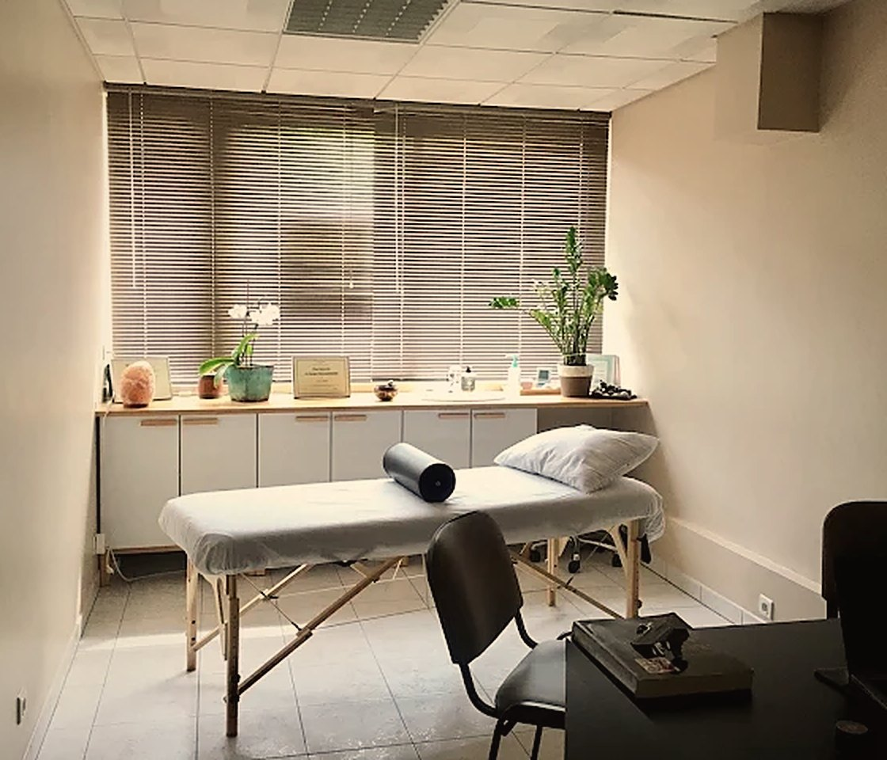

J'accompagne celles et ceux qui ressentent le besoin de se libérer de schémas limitants, de tensions enfouies et de blocages émotionnels. Praticienne en thérapie brève orientée solution et en relation d'aide, j'ai d'abord rencontré la sophrologie pour mes propres douleurs : un meilleur sommeil, moins de stress, un corps apaisé.
« Le chemin pour entrer en amitié avec soi. »
Hypnose ericksonienne, sophrologie, méthode Vittoz, Access Bars, DEEPLI : des outils choisis pour tenir compte de l'être dans sa globalité.
Chaque accompagnement commence par un premier échange pour comprendre votre demande.
Préserver sa santé, retrouver un état de bien-être, vivre en conscience et devenir plus présent à soi et aux autres.
→Oser vivre pleinement sa vie, renforcer sa confiance en soi et son image, prendre la parole avec aisance.
→Améliorer sa concentration, sa mémoire, ses performances intellectuelles et physiques, se préparer à un examen.
→Troubles anxieux, alimentaires, du sommeil, addictions, mal-être, douleurs, acouphènes, vertiges, hyperacousie.
→
Un cabinet lumineux et apaisant, avec parking visiteurs gratuit, à quelques minutes d'Aubagne.
« Je recommande vivement Nawal c’est une thérapeute exceptionnelle elle est à l’écoute et sa thérapie permet de se sentir vraiment mieux dès la 1 ère séance. Elle n’oblige en rien au niveau du nombre de séances quand on se sent mieux on n’y va plus. Elle a su m’apaiser et m’enlever les angoisses que j’avais depuis plus de 10 ans. »
« Je recommande vivement cette hypnothérapeute ! C’est une professionnelle d’une grande compétence, à l’écoute, bienveillante et profondément humaine. Elle prend le temps de comprendre, d’expliquer et d’accompagner avec beaucoup de douceur et justesse. Je recommande les yeux fermés ! »
« J ai consultée pour une simple séance et l incroyable a eu lieu une vraie libération suite à un soin quantique. Une thérapeute passionnée, profondément humaine qui ne regarde pas le temps mais le besoin, une écoute dans le respect de la personne et une grande disponibilité dans le suivi . »
« Personne dotée d'une bienveillance et d'une énergie positive qui vous met en confiance. Son travail effectué sur moi depuis 3 séances a été très efficace. Sérénité, sommeil, énergie vitale. Je la remercie du fond du coeur. »
« Nawel est une personne solaire qui me suit depuis maintenant ... Beaucoup d'années ! A l'écoute, douce et pertinente, je vais continuer de la consulter encore bien longtemps ! »
« Nawal est très à l'écoute et bienveillante. Je suis extrêmement reconnaissante qu'on me l'ai recommandée car c'est une praticienne incroyable ! Je la recommande les yeux fermés ! »
« Praticienne découverte, par hasard, je l'ai conseillée à plusieurs personnes qui sont enthousiastes comme moi au sujet de Nawel et du bien-être éprouvé après une séance chez elle. Cette personne vous veut et vous fait du bien. »
« Je recommande cette praticienne très compétente et à l écoute de ses patients. Son travail est remarquable, j ai pu voir l amélioration au fil des séances et une libération de mes souffrances enchaînées. Merci Nawel »